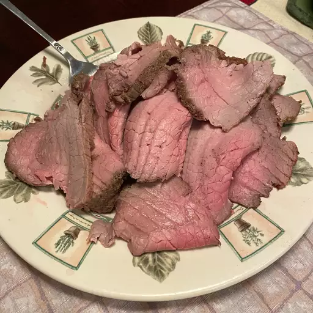

Roast Beef Recipe

How to make Roast Beef
Roast beef is a classic main dish for holidays, family get-togethers, and elegant dinners.
This incredibly easy-to-follow, 4-ingredient recipe will help you create a flavorful, moist, and tender roast like no other.
Learn how to make a mouthwatering roast, get tips on how long to cook roast beef, and find the best ways to use leftovers.
Ingredients
- 3 pounds beef eye of round roast, at room temperature.
- ½ teaspoon kosher salt, or more to taste.
- ½ teaspoon garlic powder, or more to taste.
- ¼ teaspoon freshly ground black pepper, or more to taste.
Roast Beef Step-By-Step
- Preheat oven to 375 degrees F (190 degrees C).
- Make sure roast is at room temperature. Tie roast at 3-inch intervals with cotton twine; this helps it from drying out and allows it to cook more evenly. Place roast on a rack in a baking pan.
- Mix together salt, garlic powder, and pepper in a small bowl. Rub seasoning mixture into the meat.
- Place in the preheated oven and roast for 60 minutes, or 20 minutes per pound if your roast is larger or smaller. An instant-read thermometer inserted into the center should read 120 to 125 degrees F (49 to 52 degrees C).
- Remove from the oven and transfer to a cutting board. Cover loosely with foil, and let rest so juices can redistribute, 15 to 20 minutes.
- Slice and serve.